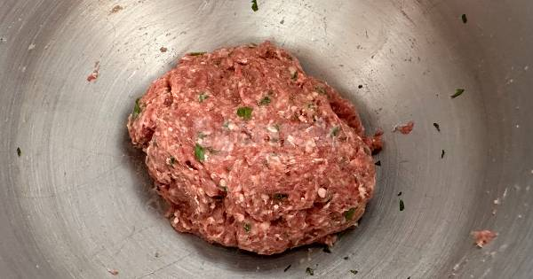
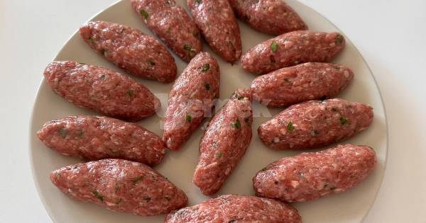
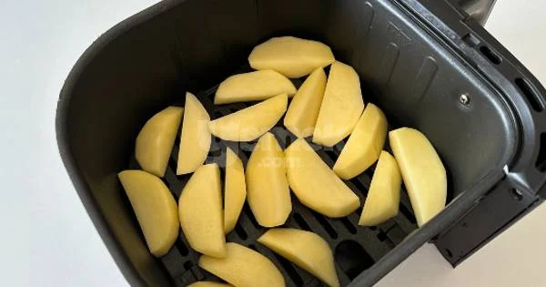
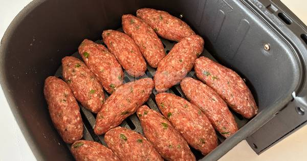
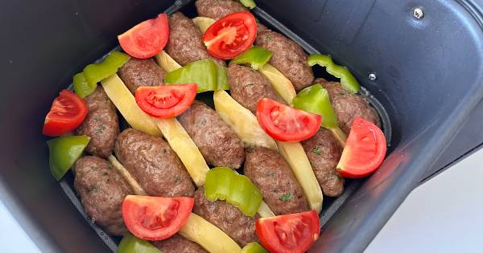
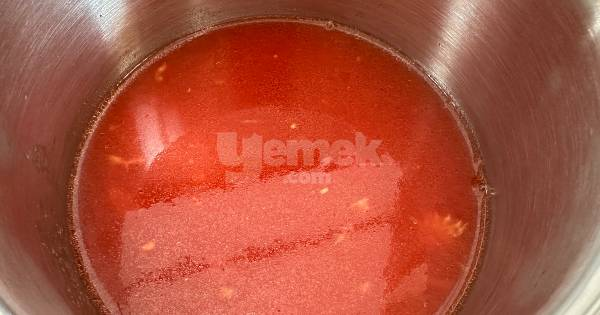
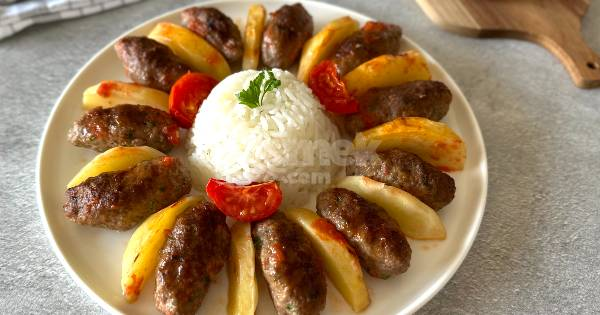

Airfryerda İzmir Köfte Tarifi Nasıl yapılır?
- Köftenin tüm malzemelerini bir kap içerisine alın.

- Güzelce yoğurun.
 - Elinizle şekil verin.
 - Patatesleri elma dilim doğrayın, 180 derecede 10 dk pişirin.
 - Köfteleride 180 derecede 8 dakika pişirin.
 - Köftelerin arasına pişen patatesleri yerleştirin.
 - Domates sosu için; tüm malzemeleri karıştırıp kaynatın. Yemeğe ekleyin.
 - Bu şekilde 10 dakika daha pişirin. Ardından servis edin. Afiyet olsun!
